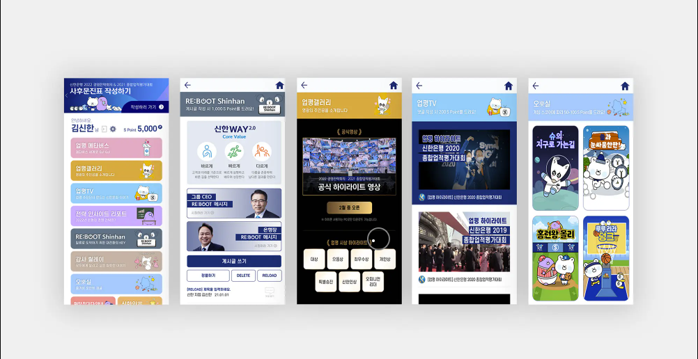
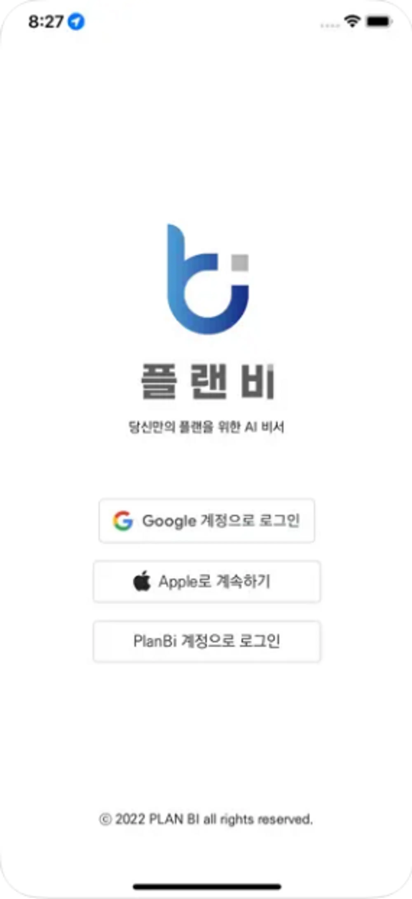
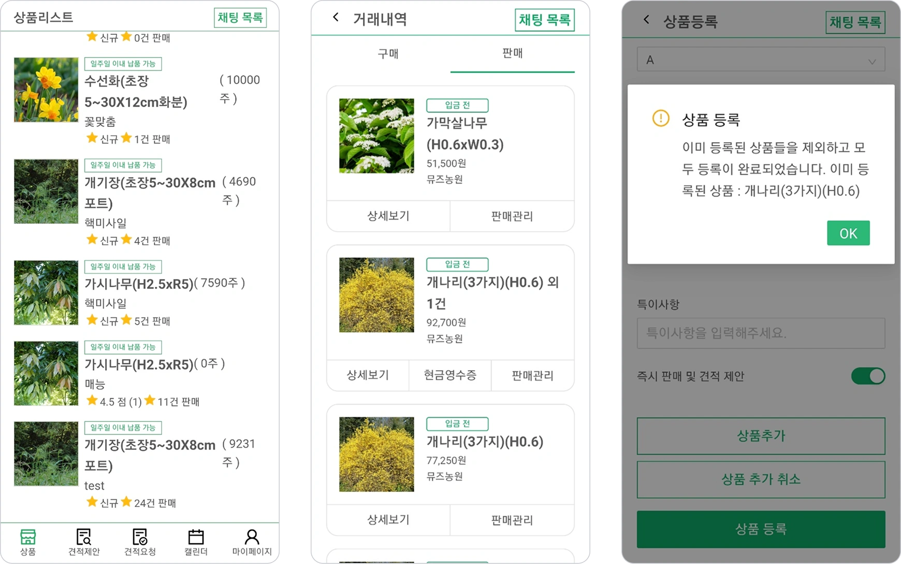
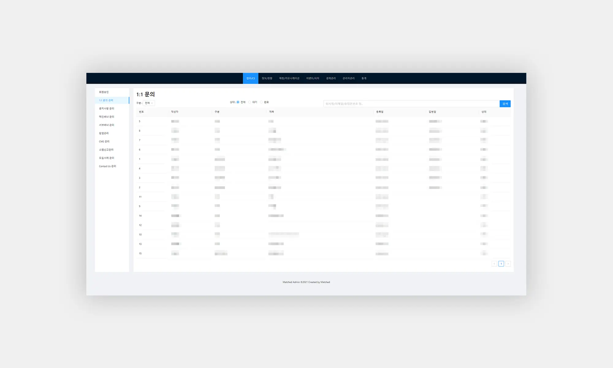
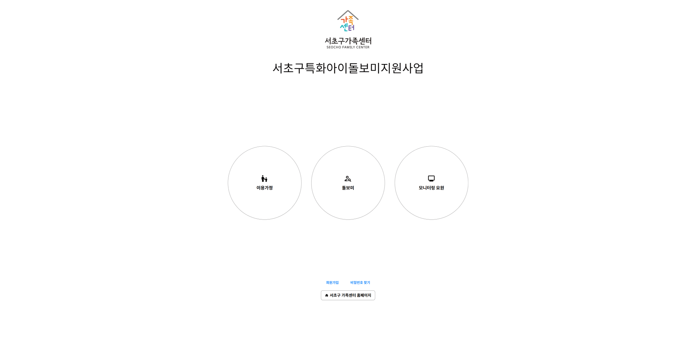
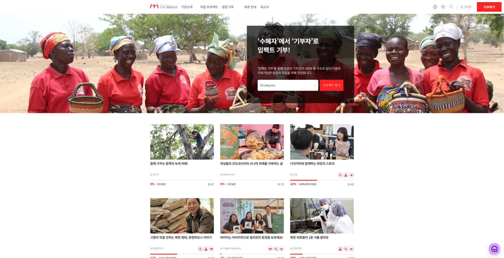
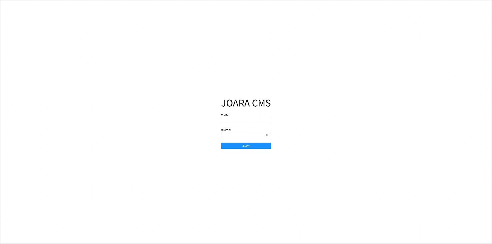

프로젝트
이강욱이 참여한 프론트엔드 프로젝트 15개입니다.
01

기간 2021.11 — 2021.12 · 역할 프론트엔드 개발
2021 신한은행 업적평가
ReactTypeScript
02
기간 2022.08 — 2022.09 · 역할 프론트엔드 개발
DEVFIVE 랜딩페이지
Next.jsTypeScript
03
기간 2021.10 — 2021.11 · 역할 프론트엔드 개발
HumanSense
Next.jsTypeScript
04

기간 2022.03 — 2022.11 · 역할 프론트엔드 개발
플랜비
ReactReact NativeTypeScript
05

기간 2021.10 — 2021.12 · 역할 프론트엔드 개발
한큐플랜트
ReactFastAPITypeScript
06

기간 2022.04 — 2022.05 · 역할 프론트엔드 개발
Matched Admin
ReactTypeScript
07
기간 2022.04 — 2022.05 · 역할 프론트엔드 개발
NCSOFT NCDP
ReactTypeScript
08

기간 2023.10 — 2024.05 · 역할 프론트엔드 개발자
서초구가족센터
ReactTypeScript
09
기간 2021.10 — 2021.12 · 역할 프론트엔드 개발자
금융보안원 위험 인텔리전스 관리 시스템
ReactTypeScript
10
기간 2023.05 — 2024.01 · 역할 프론트엔드 개발자
라운드 테이블
ReactFlutterTypeScript
11

기간 2023.09 — 2024.05 · 역할 프론트엔드 개발자
더 브릿지
ReactTypeScript
12

기간 2022.05 — 2022.09 · 역할 프론트엔드 개발자
조아라 웹소설 서비스 리뉴얼
ReactTypeScript
13
기간 2023.05 — 2024.05 · 역할 라이브러리 설계·개발
DEVFIVE 사내 공통 컴포넌트 라이브러리
ReactNext.js
14
기간 2021.11 — 2022.01 · 역할 프론트엔드 개발
Vine International Academy
ReactTypeScript
15
기간 2025.06 — 2025.08 · 역할 프론트엔드 개발
유어테스트
Next.jsTypeScript